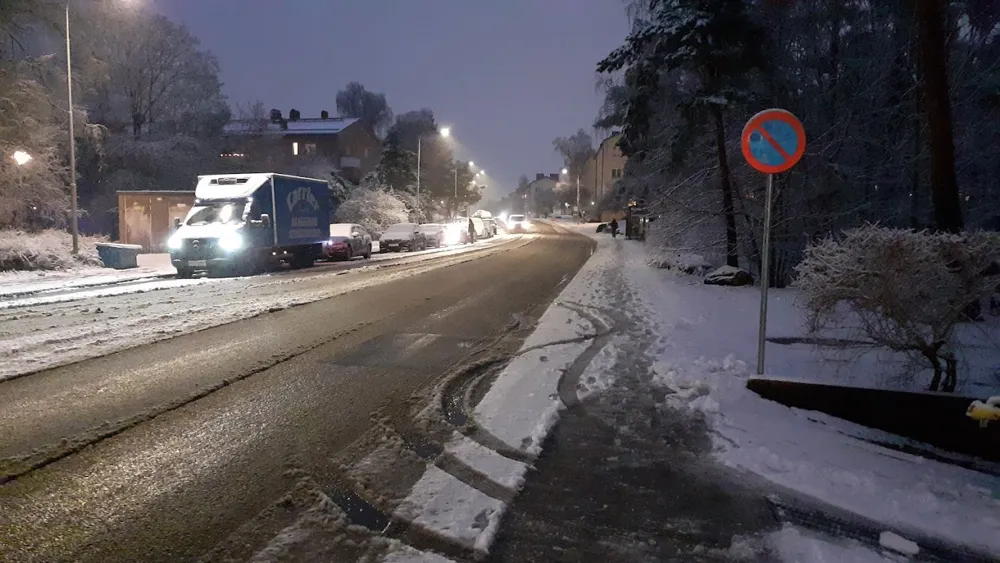

Inrikes

Ny undersökning visar: snön blir slaskigare
En ny rapport från SMHI avslöjar att snön de senaste 25 åren har blivit slaskigare. "Ett allvarligt mönster", menar Skure Svensson, meteorolog på SMHI och en av författarna till rapporten.
Rapporten, som bland annat kollat på den genomsnittliga temperaturen och "slaskfaktorn" i snön sedan år 2000, visar på en stor ökning i framförallt temperaturen. "Vi tror det främst beror på klimatförändringar", berättar Svensson. Rapporten kunde även konstatera att det inte kommer finnas någon snö alls till år 2041 ifall det fortsätter i samma takt som det gör idag. "Som tur är har nog världen ändå gått under innan dess", säger Svensson. "Och vem har klagat på lite vatten?".
Svensson berättar även att det dessvärre är en låg chans för mer snö den här vintern. "Däremot beräknas det komma 6-7 centimeter slask!". Och alla vet ju att en packad slaskboll gör minst dubbelt så ont som en lika stor snöboll. Så när du ser en hög slask, tveka inte. För nästa år kanske det inte kommer något alls…